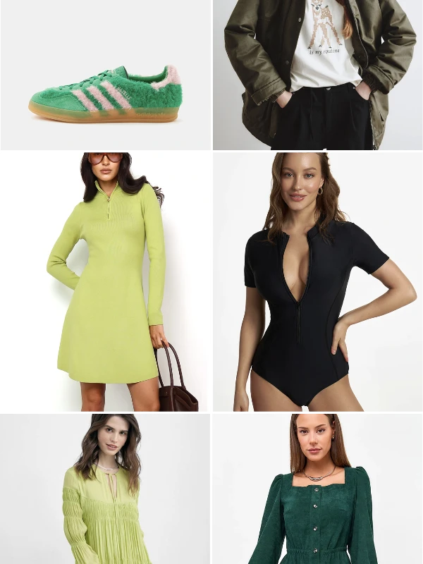
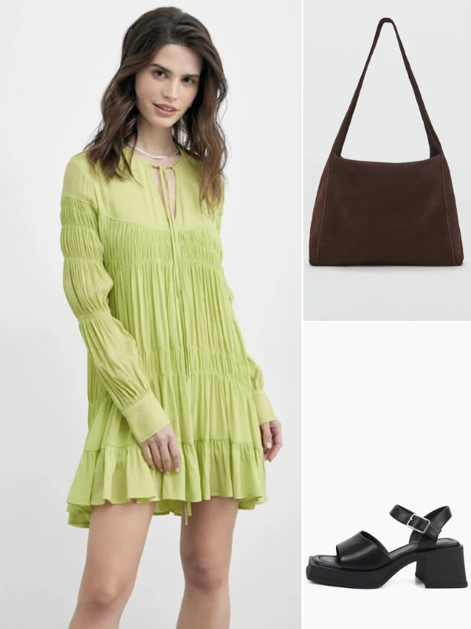
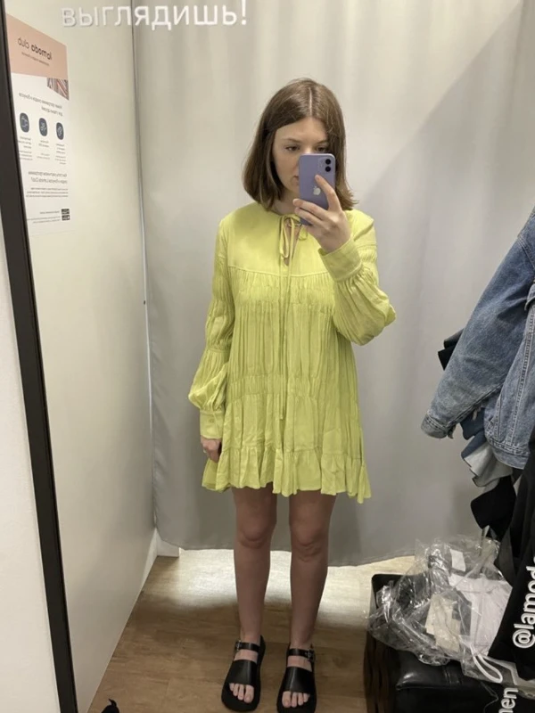
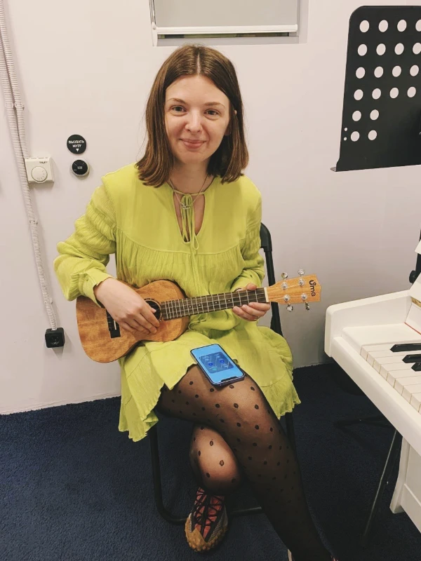
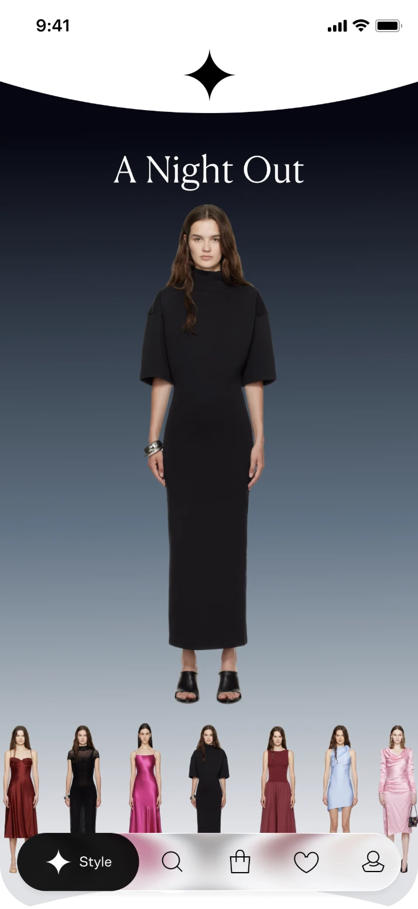
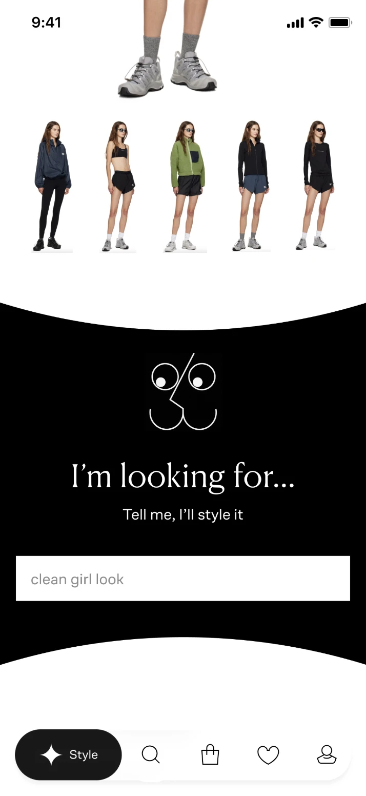

You’re in the app
The way we shop
Online stores still follow the same old model: browse, choose, buy.
But expectations are changing. Customers want more than convenience — they want inspiration and self-expression. Endless searching leads to decision fatigue and abandoned purchases.
Fashion has become a language through which people express themselves.
We are entering a new era of emotional commerce, where it’s not just about convenience, but also about inspiration and the joy of the experience.
The challenges of finding your style
We know that users want to feel confident in what they wear, but they face several barriers along the way:
— How do I put together an outfit?
— What works best for me?
— How can I stay on trend?
We also know that users often struggle to articulate what they’re looking for.
The long way to your style




Hi, I’m Sonya!
Age: 31
Job: Marketing specialist at a creative agency Income: Upper-middle Gets inspiration and shops on: Instagram, Pinterest, and single-brand stores
Next week, she’s going to the theatre with friends and has been searching for an evening outfit for days — something elegant, but not boring.
Her new shopping experience. Viewing time: 30 s
Explore the looks you never imagined

